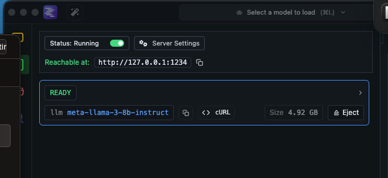
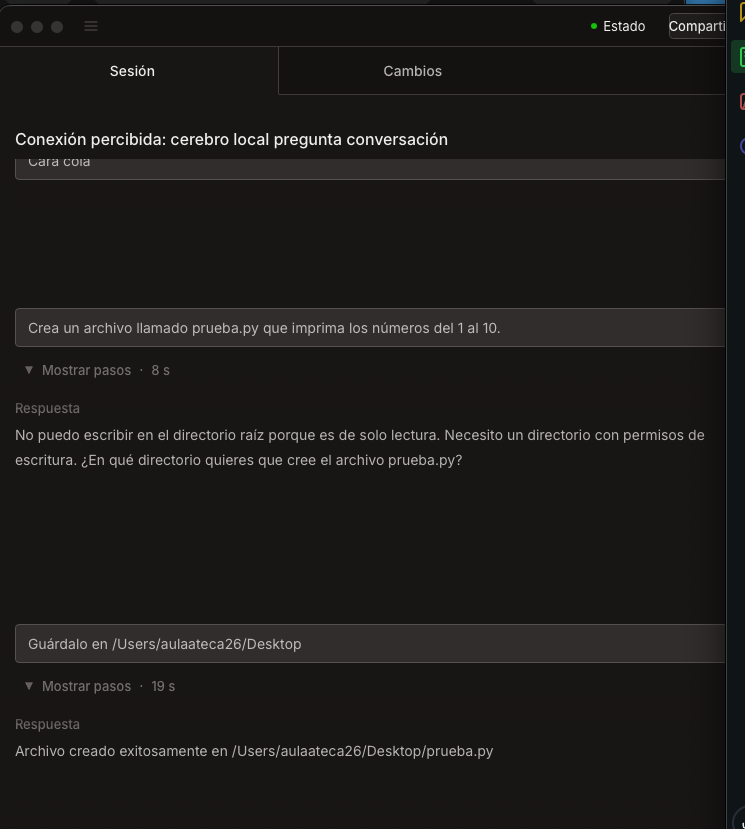

Documentación técnica de implementación de sistemas autónomos
Responsable: Izan Lopez
Hemos diseñado una solución de asistencia en programación orientada a la privacidad total. El sistema opera al 100% en local, aprovechando la aceleración de hardware del Mac para eliminar la dependencia de servicios en la nube. El esquema se divide en dos pilares fundamentales:
Configuramos LM Studio para que actúe como un puente de comunicación estandarizado (compatible con OpenAI) para el consumo del modelo.
1234.
Dada la naturaleza específica del paquete, realizamos un enlace manual del motor del agente mediante la configuración del perfil de usuario.
Inyectamos la configuración en ~/opencode/opencode.json para redirigir el flujo de pensamiento al localhost:
{
"$schema": "https://opencode.ai/config.json",
"provider": {
"lmstudio": {
"npm": "@ai-sdk/openai-compatible",
"name": "LM Studio Local",
"options": {
"baseURL": "http://127.0.0.1:1234/v1"
},
"models": {
"modelo-local": {
"name": "local-model"
}
}
}
}
}Durante el proceso de despliegue, surgieron retos técnicos que requirieron ajustes finos en la lógica de conexión y permisos:
E404 en el registro público de NPM.
Se determinó que las instrucciones de sistema originales causaban un conflicto de personalidad. Se ajustaron las directivas para que el modelo reconociera su entorno técnico real.
/Users/aulaateca26/Desktop.
El sistema se encuentra totalmente operativo. El agente no solo genera código Python optimizado, sino que tiene autonomía para crear, escribir y ejecutar scripts en el entorno local de forma segura.
